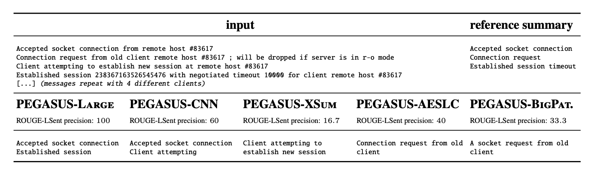
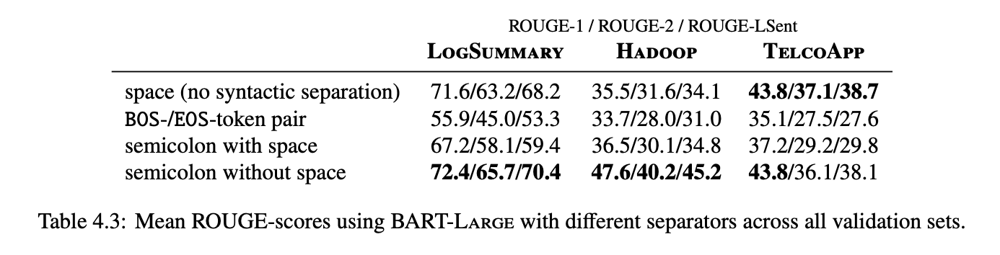
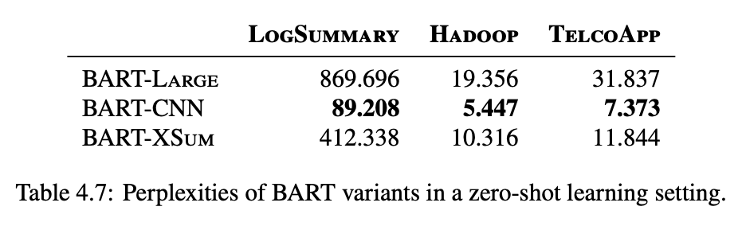

Introduction
In the complex landscape of IT operations, where the sheer volume of data can overwhelm even the most seasoned system engineers, the advent of AIOps (Artificial Intelligence for IT Operations) offers a beacon of hope. AIOps systems, leveraging automated approaches such as anomaly detection and root cause analysis (RCA), promise a new era of efficiency in maintaining system health. Among these approaches, log summarization stands out as a crucial tool for distilling impactful information from vast log data, providing engineers with the insights needed to swiftly address and mitigate system failures.
Log summarization, as the term suggests, aims to condense extensive log entries into actionable insights, focusing on identifying failures and their root causes. This process involves two primary tasks: summarizing common log events linked to specific failures and distinguishing non-normal log events that deviate from standard operation. These tasks are designed to spotlight critical information, aiding in quicker and more accurate system diagnostics.

How It Works
Unlike traditional text corpora used in NLP benchmarks, log data presents unique linguistic challenges, necessitating tailored summarization strategies. The authors are only interested in two types of log blocks, namely, common log events across failures, and non-normal log events. Common log events across failures are interesting, as such log events might be close related to the failure cause.
Technical Implementation with BART and PEGASUS
The technical implementation of these summarization tasks leverages two prominent NLP models: BART (Bidirectional and Auto-Regressive Transformers) and PEGASUS (Pre-training with Extracted Gap-sentences for Abstractive SUmmarization Sequence-to-sequence models). Both models are adapted to address the unique challenges posed by log data.
Tokenizer Limitations: One of the first hurdles is adapting the tokenizer—a component that breaks down text into manageable pieces, or tokens, for the model to process. Log data often contain compound words, technical terms, and identifiers that are not commonly found in natural language texts. To preserve the integrity of such terms, careful consideration is given to how tokenizers handle unseen or compound words, opting against splitting these terms unnecessarily.
Syntactic Separation: Unlike traditional texts punctuated with clear markers of sentence boundaries, log messages often lack these cues and are instead separated by line breaks. To teach the models to recognize these breaks as meaningful separators, we introduce special tokens (e.g., semicolons or newline tokens) during training, helping the models distinguish between separate log entries.
Handling Input Size: Given the verbose nature of log data, managing input size becomes crucial. Both BART and PEGASUS have constraints on the maximum size of input they can process. To circumvent this, log data is segmented into smaller chunks that fit within these constraints. This segmentation ensures that models can process and summarize the data effectively, albeit with the challenge of maintaining the coherence and continuity of information across segments.
Experimentation and Evaluation
Our experiments involve a detailed exploration of different separators’ impact on model output quality, revealing that semicolons and newlines, as opposed to traditional sentence-ending tokens, significantly enhance the models’ ability to demarcate and summarize log entries. BOS-/EOS-tokens were generally ineffective, often leading to poorer performance compared to having no syntactic separation. This was attributed to the tokens signaling the end of a sequence to the model, which could truncate the generated output prematurely.

Furthermore, the evaluation of summarization models fine-tuned in other domains on log data provides insights into the transferability of pre-trained models to new, domain-specific tasks. It highlights the potential of models trained on datasets with extractive tendencies, such as CNN/DailyMail, to adapt more effectively to the log summarization task, attributed to the extractive nature of log summaries. Figures 3 and 4 indicate that while pre-fine-tuning on summarization tasks provided an advantage in a ZSL setting, the performance differences between models became much less pronounced after FSL training on a few examples.

Last, the authors explore the effects of further pre-training the models on log-data. The results indicated some improvement in ZSL performance, particularly in the LogSummary dataset, through pre-training alone. However, this was not sufficient to significantly enhance the model’s ability to produce meaningful summaries. The performance scores were similar after fine-tuning, even when compared to BART-CNN, suggesting that additional pre-training on log data did not achieve the expected performance improvements.